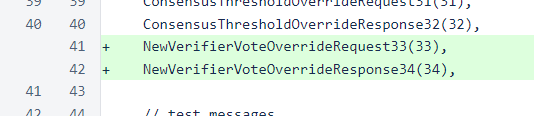
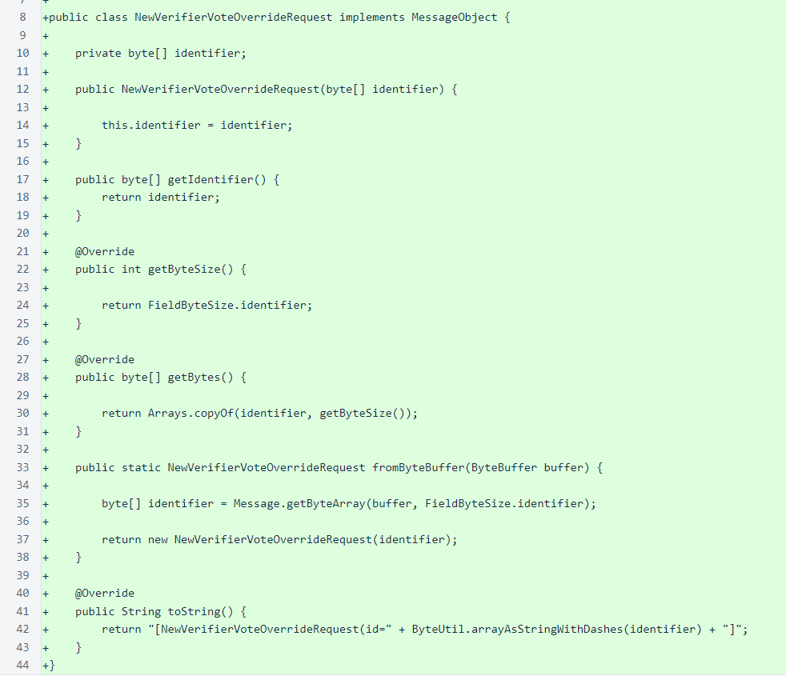
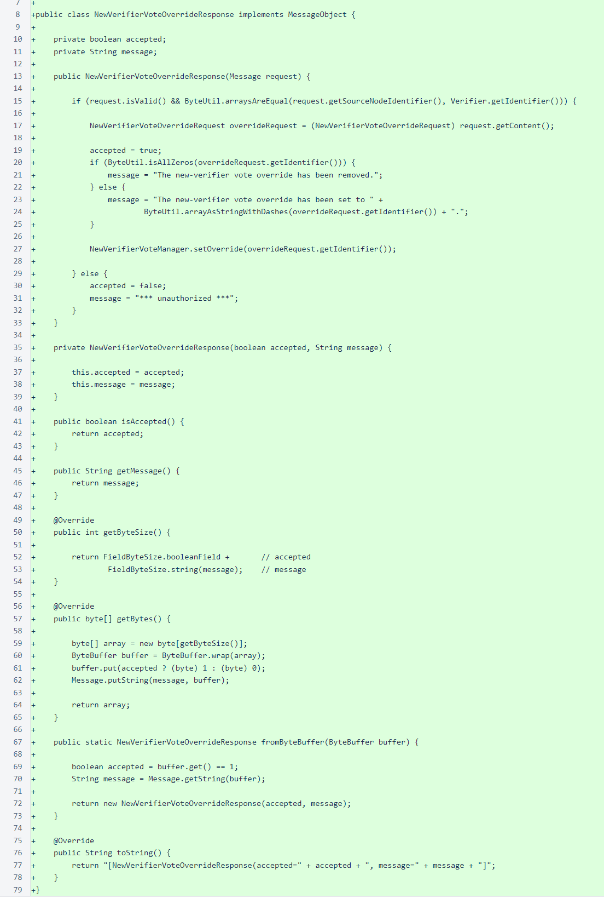
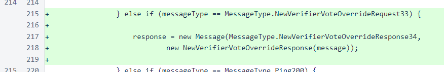
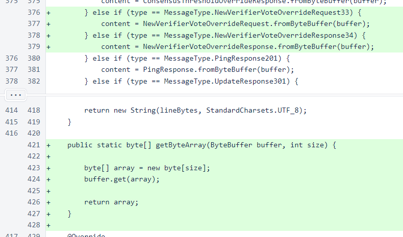
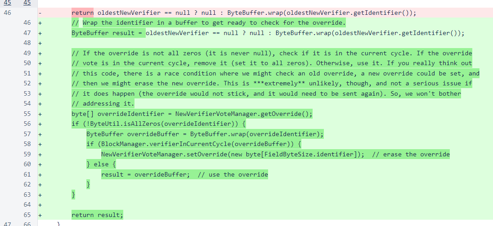

Nyzo version 473 (commit on GitHub) adds an override option for the new-verifier vote.
Determination of which verifiers to allow into the mesh is a two-step process. First, each verifier votes on which new verifier it calculates should be admitted next. Second, the tally of these votes is used in the computation of the chain score for blocks. This is the score that is used by verifiers to guide the voting process for freezing blocks.
This update was released in response to the joining of the mesh by a number of verifiers that, for reasons not yet determined, are not producing blocks and are not joining the cycle, despite other verifiers trying to allow them to join. Enough of these problematic verifiers had joined the mesh that they preventing other, properly configured, verifiers from joining the cycle.
While a later update will be issued to improve the automatic process, such an update will need to be carefully crafted and tested, as modifications to automatic processes such as this can be disastrous if released hastily and without sufficient review.
This update takes advantage of the two-step process and the ability of a small number of verifiers to influence the process to break the gridlock that the system was experiencing. In an ideal situation where all verifiers are in perfect agreement, every verifier in the current cycle will have voted for the same new verifier to admit to the cycle. The scoring process is designed to allow either this preferred verifier or the second- or third-place verifiers in the voting process to join, with preference given to the verifiers that received more votes.
Because of the natural consensus that will give most or all of the automatic votes to a single verifier, casting just a few votes for a different verifier is enough to get that other verifier into the top 3 in total votes received. This update allows a message to be sent to a verifier, signed by that verifier's private key, to manually override the vote that was automatically calculated.
The first step in creation of a new message in Nyzo is the assignment of the message numbers in the MessageType enumeration. The numerical value is always included in the enumeration name to make consistency of ordering easier to maintain and verify where the enumeration is used.
The second step is creation of the the message objects. In this case we need an object for both the request, to carry the identifier of the verifier for which we want to vote, and the response, which carries a flag indicating whether the request was approved and a message to explain the approval state.
The request class is NewVerifierVoteOverrideRequest.
The response class is NewVerifierVoteOverrideResponse. The constructor of this class processes the request and sets or removes the override as necessary.
The MeshListener class creates and sends a response to the request.
The Message class deserializes message objects from messages. The getByteArray() method was added to make message object deserialization methods easier to read by condensing reads of byte arrays from two lines to one.
The NewVerifierVoteManager class stores and serves the override.

Finally, the NewVerifierQueueManager class uses the override and erases it when the verifier joins the cycle. The comment explains a potential thread race that is not significant enough in potential frequency or in adverse impacts to warrant the additional code complexity or effort necessary for mitigation.
